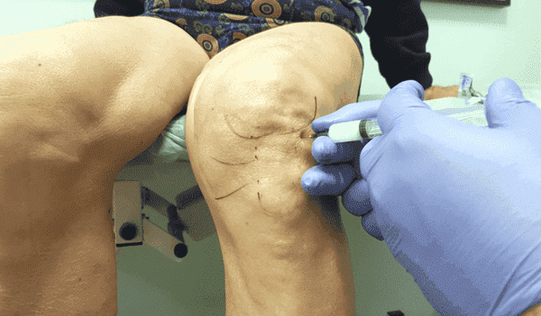
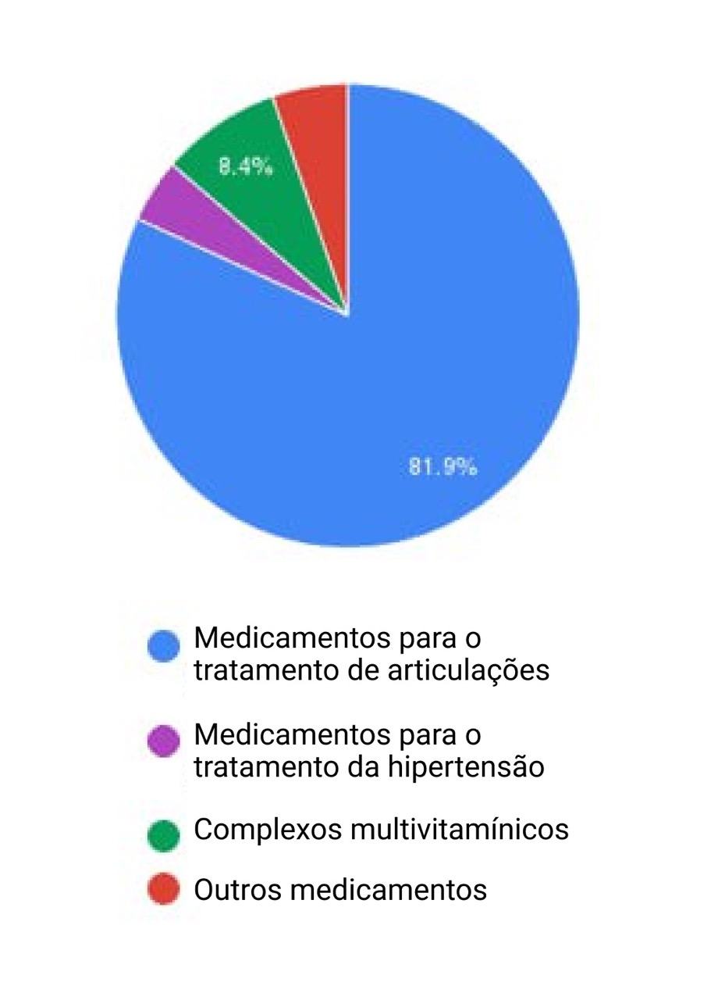
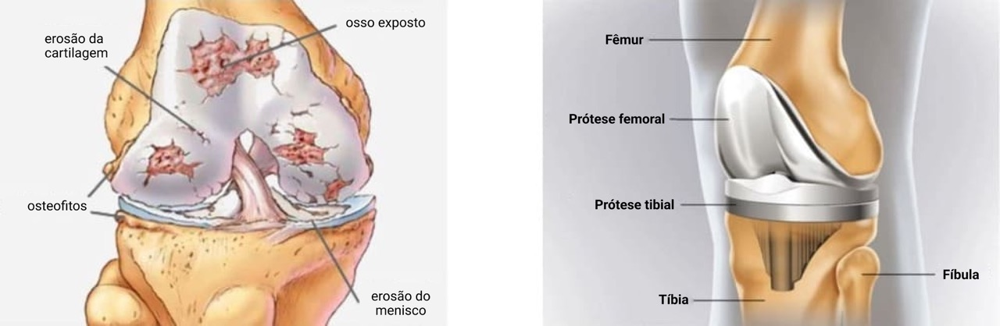
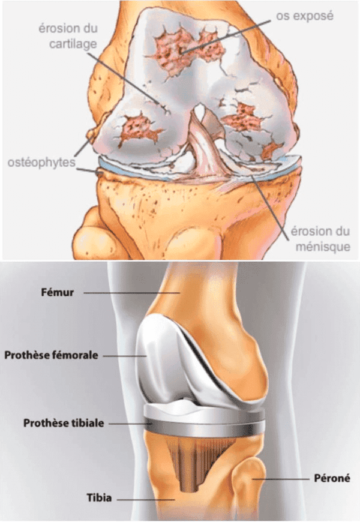
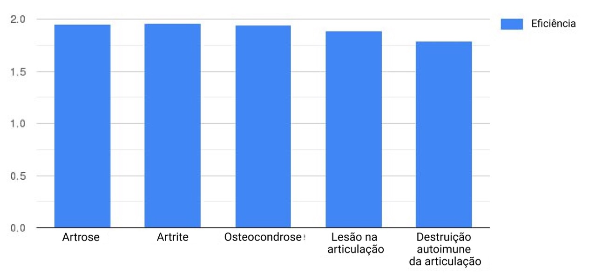
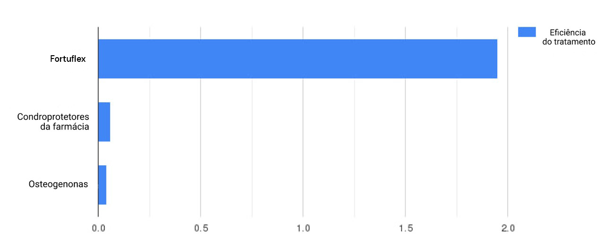
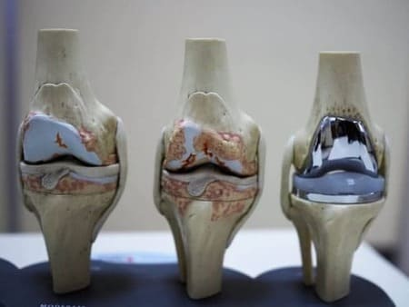

O tratamento das articulações vai durar toda a vida! Médicos tratam reformados com medicamentos caros que os tornam dependentes deles.
Na Europa, prevalece a opinião de que os reformados portugueses vivem melhor do que os de outros países devido às suas altas pensões. No entanto, como os próprios reformados afirmam, esta é a maior ilusão da União Europeia. De acordo com as estatísticas de um instituto de pesquisa independente, apenas 3,5% dos reformados portugueses desfrutam de merecido descanso, viagens e alegria de viver.
Outros devem pagar tratamentos caros para doenças relacionadas à idade
.
"É hora de parar de explorar as pessoas e libertar os reformados da escravidão."
Doutor Marco Correia, cirurgião ortopédico, autor de numerosos trabalhos científicos. O Doutor Marco Correia dá-lhe as boas-vindas no seu consultório em Coimbra.
O cirurgião ortopédico trata patologias do sistema musculoesquelético, ou seja, ossos, articulações, ligamentos, tendões e músculos, membros e coluna vertebral.
Especializado no tratamento de doenças e lesões da mão, membros superiores e ombro. Presta consultas e realiza cirurgias na clínica de Montes Claros.
"Qual é o sentido dos programas de assistência governamental se estes não visam melhorar a vida dos grupos mais vulneráveis da população? Os nossos reformados tornaram-se vítimas de um sistema que faz o que quiser com eles. O exemplo é um esquema criminoso usado por médicos em todo o mundo.
Estes visam o órgão mais frágil, as articulações, que de alguma forma incomodam todos os indivíduos com mais de 40 anos de idade. Como médico traumatologista e cirurgião ortopédico, não aguento mais ver as vítimas do sistema e ficar em silêncio...
"
"Chegou a hora de os reformados portugueses fazerem o que é de direito deles: libertarem-se da dor."
"Porque é que eu e os meus colegas deveríamos expor as pessoas ao risco de perder uma perna ou um braço durante cirurgias articulares, que poderiam ser evitadas em 98% dos casos?"
Porque é que médicos e farmácias de todos os níveis não informam as pessoas sobre o nosso novo medicamento, que pode recuperar completamente as articulações em um mês sem intervenção cirúrgica?
Responder-lhes-ei!
De facto, neste caso, as empresas farmacêuticas teriam prejuízos de milhares de euros. Atualmente, cada um dos medicamentos farmacológicos destina-se a aliviar os sintomas por um curto período de tempo. Estes fornecem alívio temporário e exigem que a pessoa os use repetidamente para aliviar a dor por um período específico.

Em 98% dos casos de tratamento de articulações em portugueses, os médicos prescrevem injeções e medicamentos que não protegem as articulações, mas aliviam temporariamente a dor. Isto agrava a situação.
Posteriormente, o medicamento deixa de aliviar a dor e o médico prescreve algum outro remédio. É um círculo vicioso. Os médicos prescrevem medicamentos que não afetam a causa da dor nas articulações, e acabam por ganhar grandes compensações de empresas farmacêuticas.
Desta forma, os reformados e idosos acabam por gastar quantias enormes de dinheiro. Eles recebem um alívio temporário, mas ao mesmo tempo são escravos da dor articular.
Pesquisas conduzidas pelo nosso instituto mostraram que os idosos em Portugal gastam 75% ou mais da sua renda em medicamentos caros, mas alegadamente "de qualidade". Enquanto isso durante o ano, a maior parte do dinheiro é gasta em medicamentos para tratar a dor articular.

81,9% dos reformados entrevistados em todas as regiões de Portugal afirmaram que os medicamentos para articulações eram os mais caros.
Mas o pior é que durante tal tratamento as articulações continuam a desgastar-se ao longo de muitos anos, levando à completa restrição de movimento, incapacidade ou até mesmo à morte. Quando a situação se torna crítica, os médicos encaminham as pessoas para o nosso centro para fazerem cirurgia. E este é um risco completamente diferente e as quantias muito mais altas. Às vezes, não há outra solução senão substituir a articulação, por isso usamos implantes. Mas as próteses são caras, e nem todos podem pagá-las.


Em , 128 pacientes que foram encaminhados para mim por seus médicos para passarem pela cirurgia de articulações evitaram a operação graças ao uso de Fortuflex.
Fortuflex
recupera a articulação com uma única aplicação, tira a dor para sempre e permite evitar intervenções cirúrgicas em 9 de cada 10 casos.
No entanto, não é prescrita por médicos nem vendida em farmácias, apesar
de
termos
resultados
de
pesquisas
de
cinco
anos
.
O medicamento foi aprovado
pela Associação Europeia de Ortopedistas e pela União Euroasiática de Cirurgiões Ortopédicos. Além dos resultados das nossas pesquisas, o Instituto de Ortopedia e Traumatologia em Roma conduziu pesquisas independentes que também confirmaram os resultados sensacionais da nossa fórmula.

O Fortuflex é a primeira que recupera a estrutura das articulações em 1 mês.
O Fortuflex é para dor nas articulações com efeito de aquecimento
:
- ✔ Alivia instantaneamente a dor.
- ✔ Recupera as funções do tecido ósseo e cartilaginoso.
- ✔ Para o processo inflamatório.
- ✔ Reduz o inchaço.
- ✔ Reabastece a falta de líquido sinovial.
- ✔ Inicia o processo de renovação completa e restauração das células danificadas do tecido articular.
- ✔ Penetra imediatamente na pele e nas articulações, fornecendo nutrientes para a regeneração celular.
Não contém agentes carcinógenos, alérgenos ou produtos químicos sintéticos
.
O Fortuflex consiste exclusivamente em extractos de plantas medicinais
, que, devido à sinergia de substâncias, ativam os processos de reconstrução e regulação do corpo.
Óleos essenciais de mentol, limão e eucalipto cítrico impedem
a destruição das articulações e ligamentos, aliviam a dor nas articulações e nutrem o tecido conjuntivo.
O extrato do confrei
alivia a inflamação e forma uma película protectora nos tecidos inflamados.
Garra do diabo e extracto de arnica
aumentam a mobilidade das articulações e melhoram a circulação sanguínea.
A resina de malagueta selvagem
aumenta a mobilidade das articulações e melhoram a circulação sanguínea.
O óleo da ervilha
fortalece a cartilagem, tendões e ligamentos, reduz a inflamação e promove a regeneração activa da cartilagem.
O extrato de sementes de castanha
possui ação anti-inflamatória, nutritiva, fortalecedora e promove a regeneração dos tecidos.
Os resultados dos ensaios clínicos surpreenderam as empresas e agitaram a comunidade científica!
Eis a resposta oficial de uma das maiores redes de farmácias de Portugal. A reacção das outras foi semelhante.
"... Não podemos vender o Fortuflex por 78 €! Este produto pode ser vendido nas farmácias por um preço mínimo de 480 euros por unidade. Somos obrigados a aumentar o preço, pois tal nos permitirá compensar a queda na demanda por outros produtos e manter o equilíbrio nas vendas. Nem todos os portugueses serão capazes de comprar este produto caro, o que significa que as pessoas vão comprar outros medicamentos menos eficazes.

O Fortuflex é indicado para o tratamento de osteocondrose, osteoartrite, osteoartrose e outros problemas articulares, incluindo alterações relacionadas à idade.

O Fortuflex mostrou uma recuperação completa da estrutura articular em 1 mês (a percentagem mais baixa foi detetada no grupo de doenças autoimunes, com uma taxa de recuperação de 87%).
O Fortuflex é dez vezes mais eficaz do que outros medicamentos no tratamento e recuperação das articulações e tecidos articulares
Graças à nossa fórmula única, o
Fortuflex
é capaz de tratar todos os tipos de problemas articulares
:
osteoartrite do joelho.

dores articulares, independentemente da etiologia.
Doutor Marco Correia
"Em todas as pesquisas de Fortuflex, a percentagem de efeitos colaterais é de 0%. Esta foi a nossa prioridade desde o início do desenvolvimento até ao fim das nossas pesquisas. Foi importante para nós desenvolver um produto que permitisse que os idosos desfrutarem da vida, em vez de ficarem presas numa cama sob o efeito de analgésicos potentes, esperando o fim da sua vida em uma terrível depressão."
Em Portugal, você pode encomendar
Fortuflex
apenas neste site
!
Como temos todas as licenças, certificados e permissões para comercializar Fortuflex para o tratamento das articulações, somos os únicos vendedores do remédio original. O formulário oficial para pedir Fortuflex com desconto pode ser encontrado nesta página abaixo
.
PROMOÇÃO PARA RESIDENTES PORTUGUESES COM MAIS DE 18 ANOS
1.
Para
comprar
o Fortuflex por
39 € e obter um desconto de 50%,
você deve
completar
18 anos n
no momento de fazer o pedido.
2.
A quantidade é limitada. O desconto é concedido se o produto com desconto estiver disponível no momento de fazer pedido
.
Importante!
Pesquisas mostraram que o mês de é o melhor momento para iniciar o tratamento das articulações. A estabilização da temperatura média acelera os processos metabólicos no corpo e intensifica a ação. O tratamento é 37% mais rápido do que em outras épocas do ano
.
António Silva
Não sei sobre vocês, mas consegui comprá-lo aqui por39 € . Ouvi dizer que em breve estará disponível nas farmácias por 480 euros.